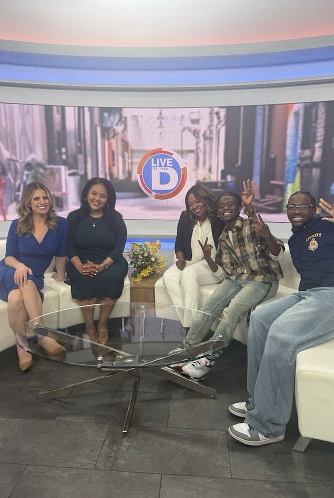
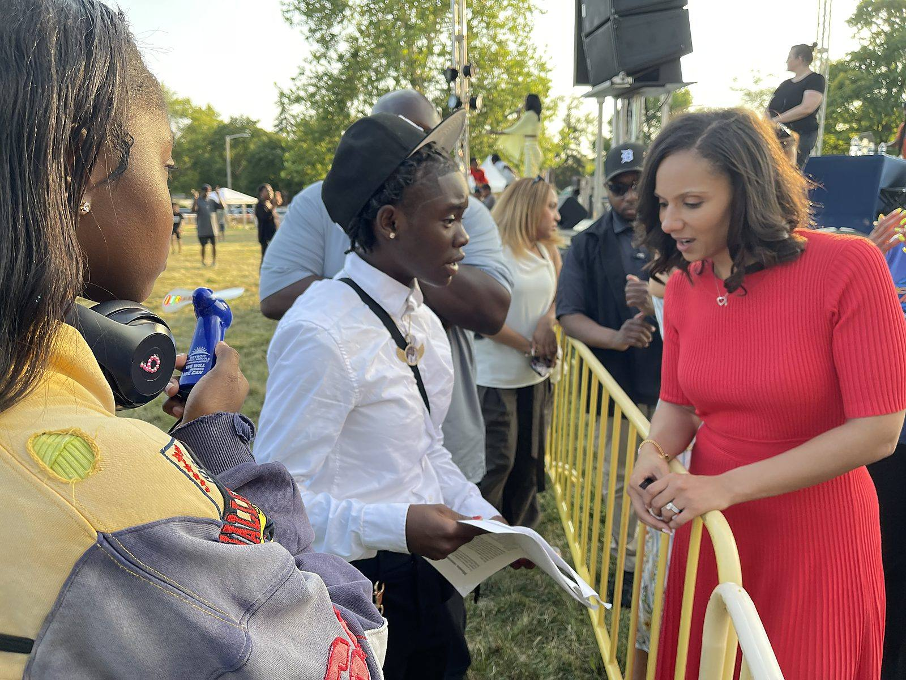

Janiah Smith spent years building other people's visions. Now the Detroit talent agent, entrepreneur, and creator is building her own. Through STVKLAND and its STVKS Open Mic Nights, she is turning undiscovered talent into community and giving young artists the one thing she knows can change everything: a chance.
Who are you, and what are you building right now?
"I'm an emerging talent agent, entrepreneur, and creator based in Detroit. I'm building a platform centered around self-expression, confidence, and creating spaces where people feel safe being unapologetically themselves. I want to become someone the next generation can look up to, not simply as an example of success, but as someone who can provide them with the blueprint, guidance, and resources to create their own. I'm also building a legacy through STVKLAND, particularly through STVKS Open Mic Nights. My goal is to create opportunities for young, emerging artists by giving them a platform to showcase their talents, network with other creatives, grow their audiences, and gain valuable hands-on experience in their respective fields. I believe there is so much undiscovered talent in our communities, and sometimes all people need is someone willing to give them a chance. I want to be that person."
"Sometimes all people need is someone willing to give them a chance. I want to be that person."
What was the moment you decided to actually go for it?
"In late February of last year, I had a moment of realization. I recognized how much time, energy, and creativity I had invested into helping build other people's platforms, brands, and visions. While I genuinely loved doing that, I started questioning why I hadn't been putting that same energy into building something of my own. I wanted to create something that reflected my vision while still allowing me to serve others in the ways I always had. That was when I decided to stop putting my own ideas on the back burner and start bringing them to life. I realized I didn't have to choose between building something for myself and helping others succeed. I could do both."
What has building this taught you about yourself?
"Building STVKLAND has taught me that ambition and growth have to go hand in hand. I've realized that I still have so much to learn, so much room to grow, and so many things I want to accomplish before I reach the level I envision for myself. At the same time, this journey has revealed just how driven and determined I can be when I have something meaningful to work toward. Most importantly, it has shown me how much I genuinely love creating opportunities for other people. Watching individuals find their communities, develop their talents, and gain confidence in what they bring to the table has become one of the most rewarding parts of what I do. I've learned that success isn't only measured by what I can accomplish for myself, but also by how many people I can help along the way."


What is something people get wrong about what you do?
"One of the biggest misconceptions about what I do is that it's easy or that it doesn't serve a real purpose. In reality, there is so much work that happens behind the scenes that people never get to see. From planning and organizing to building relationships, creating opportunities, promoting talent, and navigating unexpected obstacles, everything requires time, consistency, and dedication. It's not simply about putting people in front of a camera or hosting an event; it's about building an environment where people feel supported, recognized, and empowered to pursue something bigger for themselves. I also think people sometimes underestimate the impact that creative platforms can have on a community. What I do extends beyond entertainment and content creation. I'm intentional about being civically engaged, using my voice, my content, and my platform to bring attention to things happening around me and contribute to the community I represent. I don't just want to create visibility; I want to create meaningful opportunities and lasting impact."
"The vision is bigger than the platform, and the legacy is bigger than me."
What is next? What does the near future look like for you?
"What's next is bigger than anything I've done so far. I want to build a creative ecosystem where young artists, entrepreneurs, and content creators can find community, develop their skills, establish meaningful connections, and access opportunities that help them turn their potential into something tangible. I want to create a space that grows far beyond what we've traditionally seen here in Detroit, something that can eventually reach beyond the city and create opportunities for creatives on a much larger scale. I know I'm only at the beginning of what I envision for STVKLAND, and there is so much more work to be done. I'm focused on growing, expanding, and making sure that everything I build has a purpose behind it. There's a lot more coming, and I want people to understand that this is only the foundation. Stay tuned."
Words by A Near Future